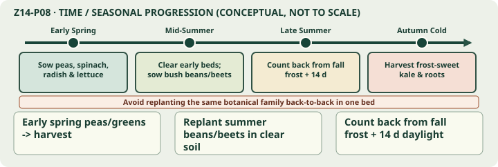

Z14-P08 · Food production and preservation · New manuscript
Use succession and fall planting to stretch northern garden harvests
Harvest continuous fresh food across spring, summer, and autumn instead of one single mid-summer glut.
When it applies · Short-season home gardens seeking higher total food yield per square foot.
Equipment · Garden bed calendar, fast-maturing seed varieties (30–60 days), and frost-date countdown.

Actions
- Replant empty space immediately after early spring crops finish (for example, harvesting June spinach, peas, or radishes and sowing quick bush beans, beets, or fall greens in the cleared soil after refreshing compost).[P19, P01]
- Stagger small sowings of fast crops (radishes, bush beans, lettuce) every 2 to 3 weeks rather than planting an entire packet on one day that all bolts or spoils simultaneously.[P19]
- Count backward from your average first autumn frost date (plus 14 extra days because shrinking autumn daylight slows growth sharply) to seed hardy fall kale, spinach, turnips, and carrots in late July or August.[P19, P01]
Failure recognition · Planting all bush beans and lettuce on one spring weekend, facing a single unmanageable glut followed by bare weed-filled beds in August.[P19]
Verify · Confirm cleared early beds are re-amended and replanted on schedule, with autumn daylight slowdown factored into late-summer sowings.[P19]
Stop or change course · Skip replanting the exact same plant family back-to-back in the same bed to avoid compounding soil pests and diseases.[P03, P19]
Evidence and editorial notes
- P01 · University of Minnesota Extension · Planting the Vegetable Garden (current web edition)
- Section: Site Selection, Sunlight, Frost Dates, and Short-Season Planning · Conditions: Home vegetable gardening in Upper Midwest / Minnesota (USDA Zones 3–5)
Support: Select a sunny well-drained garden site receiving 6–8+ hours of direct sunlight, match crop days-to-maturity to local last-spring and first-autumn frost dates, and separate cool-season crops from frost-sensitive warm-season crops.
Limitations: Microclimates, low frost pockets, and soil clay/sand composition shift local planting windows by weeks. · Conflicting evidence: None; anchors regional Minnesota growing-season realism.
Editorial note: Grounds Z14 regional food production and frost-window planning. · Specialist reviewer: Horticulture and university Extension specialist
Primary source · checked 2026-11-24 - P03 · University of Minnesota Extension · Planting the Vegetable Garden (current web edition)
- Section: Watering, Mulching, Crop Rotation, and Integrated Pest Management · Conditions: Home vegetable plots across seasonal dry/wet swings
Support: Water deeply at the soil base rather than overhead foliage to conserve moisture and curb fungal disease, mulch soil to stabilize temperature and weeds, rotate plant families across seasons, and identify pests before choosing least-toxic controls.
Limitations: Untreated rainwater or suspect surface water should not be splashed onto ready-to-eat leafy crops immediately before harvest. · Conflicting evidence: None; aligns with FSG-4 clean produce handling.
Editorial note: Grounds resilient low-input gardening and biological pest management. · Specialist reviewer: Extension horticulture and integrated pest management
Primary source · checked 2026-11-24 - P19 · University of Minnesota Extension · Planting the Vegetable Garden (current web edition)
- Section: Season Extension, Cold Frames, Seed Saving Limits, and Succession Planting · Conditions: Northern short-season gardens seeking spring/fall harvest extension
Support: Use row covers, low tunnels, or ventilated cold frames to buffer light frosts and stagger fast-maturing crops (succession planting), noting that open-pollinated vs hybrid seeds behave differently if saved and require isolation/dry storage.
Limitations: Unvented plastic tunnels overheat rapidly on sunny spring days and cook tender seedlings within an hour. · Conflicting evidence: None; grounds realistic northern season extension without overpromising winter yields.
Editorial note: Supports northern resilience and seed-planning cards in Z14. · Specialist reviewer: Horticulture and Extension specialist
Primary source · checked 2026-11-24
Source lineage · UMN Extension Vegetable Crop Management; new manuscript · Classification · New manuscript.